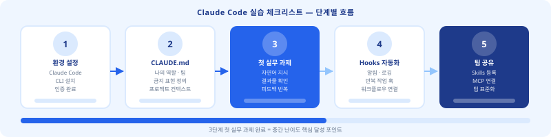
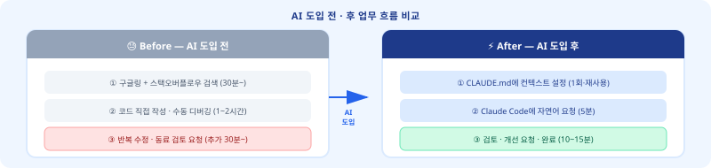
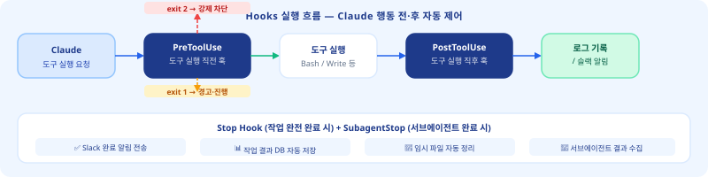
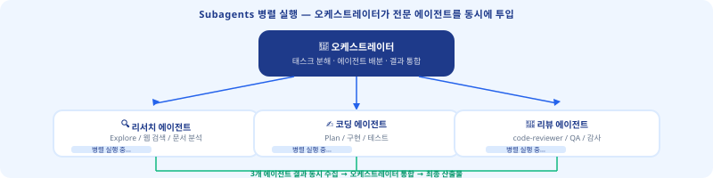
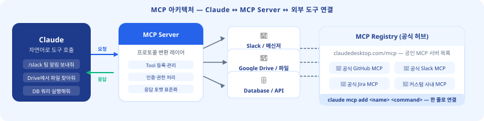
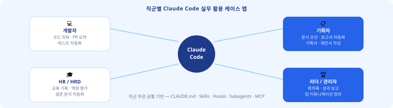

이런 경험 있으셨나요?
"매번 같은 설명을 반복해서 입력한다" · "Claude가 내 스타일을 기억 못 한다" · "팀원마다 사용법이 제각각이다"
오늘 이 세 가지가 전부 해결됩니다.

./CLAUDE.md~/.claude/CLAUDE.md.claude/CLAUDE.md~/.claude/projects/<project>/memory/MEMORY.md — 대화 중 Claude가 자동으로 기억을 저장·불러오는 5번째 계층. 수동 작성 불필요.# HR 업무 보조 — 나의 Claude 설정 ## 역할 당신은 HR 전문가 보조 AI입니다. 인사·교육·채용 관련 문서를 작성합니다. ## 절대 규칙 - 개인정보(이름, 사번, 연봉)는 절대 출력 금지 - 결론 먼저, 배경 나중 (두괄식 항상) - 한국어로만 답변 ## 선호 형식 - 교육 기획안: Kirkpatrick 4단계 구조 - 보고서: 요약 → 상세 → 액션 아이템 - 코드: 주석을 한국어로 ## 금지 표현 - "~인 것 같습니다" (단정하지 않는 표현) - "죄송합니다"로 시작하는 문장

/명령어 입력 한 번으로 복잡한 반복 작업을 실행하는 커스텀 슬래시 명령어. SKILL.md 파일 하나로 정의합니다..claude/skills/<name>/SKILL.md/기획서 팀빌딩 신입사원 60분 처럼 명령어 뒤 인자를 자동으로 주입합니다./기획서 [회의 핵심 3줄]/수강후기분석 [파일첨부]/고객답변 [문의유형]
--- name: 교육기획 description: 주제와 대상을 입력하면 교육 기획안 초안을 생성합니다 --- # 지시사항 교육 기획안을 작성합니다. Kirkpatrick 4단계 평가 모델 적용. # 입력값 주제·대상·시간: $ARGUMENTS # 출력 형식 1. 학습 목표 (Bloom 분류 기반) 2. 커리큘럼 (모듈별 시간 배분) 3. 평가 방법 (Kirkpatrick 1~4단계) 4. 준비물 및 주의사항 # 제약 - 반드시 두괄식으로 작성 - 학습 목표는 동사로 시작
name: 슬래시 명령어 이름description: Claude가 언제 이 스킬을 쓸지 판단하는 기준
/교육기획 리더십 팀장급 4시간$ARGUMENTS = "리더십 팀장급 4시간".claude/ 폴더를 git에 커밋/수강후기분석 · /교육기획/기획서 · /회의록/pr리뷰 · /테스트케이스/고객답변 · /제안서초안

{ "hooks": { "PreToolUse": [{ "matcher": "Bash", "hooks": [{ "type": "command", "command": "cmd=$(jq -r '.tool_input.command'); if echo \"$cmd\" | grep -q 'rm -rf'; then echo '위험 명령어 차단됨'; exit 2; fi" }] }], "PostToolUse": [{ "matcher": "Write", "hooks": [{ "type": "command", "command": "echo \"[LOG] 파일 수정: $(date)\" >> ~/claude-log.txt" }] }] } }
rm -rf 명령 감지 시 즉시 차단type: "command" → 셸 스크립트 경유type: "mcp_tool", server: "...", tool: "..." → MCP 직접 호출. 중간 스크립트 없이 더 안정적.PreToolUse Hook으로 차단해 보세요.
--- name: 회의록정리 description: 회의 내용을 받아 액션 아이템과 결정사항을 구조화합니다 tools: [Read, Write] --- ## 역할 당신은 회의록 정리 전문가입니다. 회의 내용에서 중요한 것만 추출합니다. ## 출력 형식 ### 결정 사항 - (항목별 기재) ### 액션 아이템 | 내용 | 담당자 | 기한 | |------|--------|------| ## 규칙 - 발언자 이름·직책 제거 - 액션 아이템은 담당자 명시 필수 - 모호한 항목은 질문 형식으로 표시
name: 에이전트 이름description: 언제 이 에이전트를 쓸지tools: 허용 도구 목록 (보안 제한)
"오늘 팀 미팅 내용이야. 회의록정리 에이전트로 정리해줘.""회의록 정리 + 다음 주 아젠다 준비를 동시에 해줘."

| 연결 서비스 | Claude가 할 수 있는 것 | 활용 직군 |
|---|---|---|
| GitHub | PR 읽기·댓글 작성·이슈 생성 | 개발자 |
| Google Drive | 문서 읽기·스프레드시트 수정 | 기획·HR |
| Slack | 메시지 전송·채널 읽기 | 전 직군 |
# GitHub MCP 추가 (project scope) claude mcp add @modelcontextprotocol/server-github \ --scope project \ -e GITHUB_TOKEN=$GITHUB_TOKEN # 설치된 MCP 목록 확인 claude mcp list # MCP 제거 claude mcp remove github
{ "mcpServers": { "github": { "command": "npx", "args": ["-y", "@modelcontextprotocol/server-github"], "env": {"GITHUB_TOKEN": "$GITHUB_TOKEN"} } } }
"오늘 올라온 PR 목록 보여줘""#123 이슈에 댓글 달아줘""main 브랜치 최신 커밋 요약해줘"
matcher: "mcp__github__*" 패턴으로 MCP별 규칙 설정.
claude mcp search)에서 검증된 서버만 사용하세요.claude mcp search [서비스명]으로 검색합니다.
## 코드 리뷰 기준 # 이 프로젝트의 코딩 규칙 ## 필수 체크 항목 - 함수명: 동사+명사 camelCase - 에러 처리: try-catch 필수 - 중복 로직: 3회 이상 시 함수 분리 ## 금지 패턴 - any 타입 사용 금지 (TypeScript) - console.log 프로덕션 코드 금지 - 매직 넘버 하드코딩 금지 ## PR 리뷰 형식 우선순위: 🔴 필수수정 / 🟡 권고 / 🟢 칭찬 각 항목: 파일명:라인번호 + 이유 + 수정안
/기획서 [회의 핵심 3줄] 입력 → 표준 양식 초안 30초 완성. CLAUDE.md에 회사 기획서 포맷·금지 표현·필수 섹션 고정--- name: 기획서 description: 회의 핵심 내용으로 기획서 초안 생성 --- # 지시사항 회사 표준 기획서 양식으로 초안 작성. # 입력 회의 내용 / 주제 / 목표: $ARGUMENTS # 출력 구조 1. 배경 및 목적 (2문장) 2. 추진 범위 및 대상 3. 주요 요구사항 (bullet 5개 이내) 4. 기대 효과 (정량 지표 포함) 5. 일정 및 담당자 (표 형식) 6. 리스크 및 대응 방안
/수강후기분석 Skills → AI가 긍/부정 분류 + 개선 포인트 자동 추출--- name: 수강후기분석 description: 수강 후기 파일을 분류·분석하여 개선 포인트를 추출합니다 --- # 지시사항 수강 후기를 분석하여 보고서 작성. # 분석 항목 1. 긍정/부정/중립 비율 (%) 2. 긍정 키워드 Top 5 3. 개선 요구 키워드 Top 5 4. 강사 관련 피드백 분리 5. 다음 기수 개선 제언 3가지 # 제약 - 수강생 이름 절대 출력 금지 - 수치는 후기 건수 대비 % 표기
## 보고서 포맷 ### 회의록 형식 - 결정 사항 (번호 목록) - 액션 아이템 | 담당자 | 기한 (표) - 다음 회의 아젠다 ### 성과 보고 형식 # 경영진 보고용 — 간결·수치 중심 - 이번 달 주요 성과 (3줄) - 목표 대비 달성률 (%) - 다음 달 집중 과제 (2개) ### 직급별 어조 - 경영진 보고: 결론 → 수치 → 다음 단계 - 팀원 공유: 맥락 → 결론 → 요청사항
## 커뮤니케이션 톤 ### 고객사 규모별 어조 - 대기업: 격식체·전문 용어 허용 - 중소기업: 친근하고 실용적 - 스타트업: 간결·요점 중심 ### 이메일 구조 1. 인사 (1줄) 2. 요약 (1~2줄) 3. 본문 (bullet 3~5개) 4. 다음 단계 + 마감일 5. 클로징 (1줄) ## 절대 규칙 - 가격·계약 조건 임의 제시 금지 - 경쟁사 언급 금지
## 역할 TypeScript + React 팀 코드 리뷰 보조. 시니어 개발자 관점, 두괄식 피드백. ## 코딩 컨벤션 - any 타입 금지 → unknown 또는 명시 타입 - 300줄 초과 파일 발견 시 분리 제안 - 함수명: 동사+명사 camelCase ## PR 리뷰 형식 🔴 필수수정 | 🟡 권고 | 🟢 칭찬 파일:라인 + 이유 + 수정안 형식 ## 금지 - "~것 같습니다" 금지 — 단정하여 기술 - console.log 프로덕션 코드 금지
## 역할 기업 HRD 전문가 보조. 교육 기획·운영·평가 문서 전담. ## 교육 설계 기준 - 학습 목표: Bloom 분류 기반 행동 동사 - 평가: Kirkpatrick 4단계 모델 - 참조 파일: @templates/edu-format.md ## 문서 형식 - 기획안: 목표→대상→내용→평가→운영 - 수강후기 보고: 수치 먼저, 텍스트 나중 - 강사 피드백: 긍정→개선→권고 순서 ## 절대 규칙 - 수강생 이름·사번 출력 금지 - 영어 약어 첫 등장 시 한국어 병기
@templates/edu-format.md처럼 다른 파일을 CLAUDE.md에 포함 가능. /memory 명령으로 현재 로드된 계층 확인.--- name: 분석후보고서 description: 데이터 분석 후 즉시 보고서 생성 context: fork user-invocable: true --- # Step 1 — 데이터 분석 $ARGUMENTS 데이터를 먼저 분석: 1. 핵심 수치 3개 추출 2. 전월 대비 증감률 계산 3. 이상값(±2σ) 식별 # Step 2 — 보고서 자동 생성 분석 완료 즉시 경영진 보고 형식: - 핵심 요약 (3줄 이내) - 주요 수치 테이블 - 권고 액션 2~3개 # 동적 컨텍스트 현재 날짜: !`date +%Y-%m-%d` 프로젝트: !`basename $PWD`
context: fork → 독립 컨텍스트에서 실행.!`명령어` 동적 주입!`date +%Y-%m-%d` → 오늘 날짜!`git log -1 --format=%s` → 최근 커밋!`cat config.json` → 설정 파일 내용
.claude/skills/{ "hooks": { "PreToolUse": [{ "matcher": "Write", "hooks": [{ "type": "command", "command": "fp=$(jq -r '.tool_input.file_path // \"\"'); if echo \"$fp\" | grep -q '\\.env'; then echo '⛔ .env 수정 차단'; exit 2; fi" }] }], "Stop": [{ "hooks": [{ "type": "command", "command": "curl -s -X POST $SLACK_WEBHOOK -d '{\"text\":\"✅ Claude 작업 완료\"}'" }] }], "PostToolUse": [{ "matcher": "mcp__github__*", // v2.1.118+ mcp_tool 핸들러 — MCP 도구에도 Hooks 적용 "hooks": [{ "type": "mcp_tool", "server": "logger", "tool": "log_action" }] }] } }
.env 파일을 쓰려 할 때 즉시 차단. API 키·비밀번호 노출 사고 원천 방지.
$SLACK_WEBHOOK은 환경변수 설정.
type: "mcp_tool"로 MCP 직접 호출matcher: "mcp__github__*"--- name: 리서치전문가 description: 웹 검색으로 최신 정보를 수집합니다 tools: [WebSearch, WebFetch] --- ## 역할 주어진 주제를 검색하고 핵심 정보만 추출. ## 출력 형식 - 출처 URL 반드시 포함 (code.claude.com 등) - 최신 3건 이내 정보 우선 - 상충 정보 있으면 양쪽 제시 ## 제약 - 파일 생성·수정 불가 (tools 제한) - 주관적 해석 없이 사실만 보고
[WebSearch, WebFetch][Read, Write][Bash, Read]{ "mcpServers": { "gdrive": { "command": "npx", "args": ["-y", "@modelcontextprotocol/server-gdrive"], "env": { "GOOGLE_CLIENT_ID": "$GOOGLE_CLIENT_ID", "GOOGLE_CLIENT_SECRET": "$GOOGLE_CLIENT_SECRET" } }, "slack": { "command": "npx", "args": ["-y", "@modelcontextprotocol/server-slack"], "env": {"SLACK_BOT_TOKEN": "$SLACK_BOT_TOKEN"} }, "notion": { "command": "npx", "args": ["-y", "@suekou/mcp-notion-server"], "env": {"NOTION_API_TOKEN": "$NOTION_API_TOKEN"} } } }
.mcp.json 권장~/.claude.json
claude mcp search [서비스명]code.claude.com/docs/en/ADDIE 4단계 (분석·설계·개발·실행) 기반 · Kirkpatrick 4단계 측정 정합
~/.claude/skills/)에 저장하면 모든 프로젝트에서 사용 가능합니다."$GITHUB_TOKEN"처럼 환경변수 이름만 남기고 공유. 팀원이 각자 로컬에서 환경변수를 설정합니다..env 환경변수로 관리하세요./명령어가 됩니다. 파일명을 name과 동일하게 유지하고 영문 소문자+하이픈 형식을 권장합니다.jq -r '.tool_input.command'. 페이로드 필드: tool_name · tool_input · tool_response. 공식 환경변수는 $CLAUDE_PROJECT_DIR · $CLAUDE_PLUGIN_ROOT 등 별도. 상세: code.claude.com/docs/en/hooks@파일명 참조 구조로 분리하는 것이 가장 관리하기 쉽습니다./팀명-명령어 접두어 권장. /memory 같은 내장 명령어 이름은 피하세요.http 타입으로 외부 URL에 POST 요청을 보낼 수 있습니다. 응답이 느린 API는 PostToolUse 또는 Stop 이벤트에서만 사용 권장..claude/agents/ 폴더를 git에 커밋하면 됩니다. Subagent 파일에 API 토큰 등 민감 정보를 직접 넣지 않도록 주의하세요.claude mcp list로 서버 상태 확인 → 문제 시 claude mcp remove [이름] 후 재추가. 사용하지 않는 서버는 월 1회 정기 정리하세요.Ctrl+C — 취소Shift+Tab — 모드 전환Esc Esc — 이전으로 되돌리기Ctrl+R — 히스토리 검색\+Enter — 멀티라인 입력Ctrl+L — 화면 초기화/ — Skills·명령어 호출! — Bash 직접 실행@ — 파일 경로 자동완성Ctrl+O — 실행 내역 보기@참조파일 구조로 분리.grep -q 'rm -rf'처럼 위험 명령어만 골라 차단."$GITHUB_TOKEN"처럼 환경변수 참조만 사용.claude mcp list로 월 1회 점검 → 안 쓰는 서버 제거..claude/skills/ 폴더에 파일을 만들고 /명령어로 호출해봤다claude mcp add 명령어로 서버를 추가하는 흐름을 안다/memory 명령으로 현재 로드된 CLAUDE.md 계층을 확인할 수 있다code.claude.com/docs/en/을 알고 있다# 메인 대화에서 Subagent 호출 (isolation:worktree) Agent({ description: "인증 모듈 리팩토링", isolation: "worktree", // git worktree 자동 생성 prompt: "auth/ 디렉토리 리팩토링: 1. 함수 분리 (300줄 → 파일당 100줄) 2. 에러 처리 표준화 3. 테스트 추가" }) // 결과: // - 변경 없으면 worktree 자동 정리 // - 변경 있으면 브랜치 반환 → PR 생성
Explore — 읽기 전용 탐색 (빠름·저렴)Plan — 설계·아키텍처 검토general-purpose — 범용 작업codex-rescue — 복잡한 디버깅code-reviewer — 코드 리뷰커스텀 — .claude/agents/에 정의
Explore (경량 모델 라우팅 가능). 팀 공유는 .claude/agents/ → git 커밋.SessionStart — 세션 시작 시 환경 준비UserPromptSubmit — 프롬프트 처리 전 검사PreToolUse — 도구 실행 전 권한 제어PostToolUse — 성공 후 자동 처리PostToolUseFailure — 실패 후 알림Stop — 응답 완료 시 보고SubagentStop — 서브에이전트 완료 후처리
# permissionDecision 4가지 jq -n '{ hookSpecificOutput: { hookEventName: "PreToolUse", permissionDecision: "ask", permissionDecisionReason: "프로덕션 DB 수정 확인 필요", additionalContext: "영향 레코드: 약 5,000건" } }' # allow → 즉시 실행 # deny → 차단 (사유 표시) # ask → 사용자 확인 요청 # defer → 나중에 재개 (비대화형)
{ "hooks": { "PostToolUse": [{ "matcher": "Bash", "hooks": [{ "type": "http", "url": "https://hooks.slack.com/...", "headers": { "Content-Type": "application/json" }, "timeout": 10 }] }], "UserPromptSubmit": [{ "hooks": [{ "type": "command", "command": "~/.claude/hooks/check-sensitive.sh" }] }] } }
timeout 설정 필수 (기본값 없음).--- name: deploy-prod description: 프로덕션 배포 실행 (수동 호출 전용) disable-model-invocation: true # Claude 자동 트리거 방지 user-invocable: true # /deploy-prod 로만 실행 effort: high # 높은 추론 강도 paths: ["Dockerfile", "*.yaml"] # 이 파일 작업 시에만 활성화 --- ## 배포 체크리스트 1. git status 확인 (미커밋 변경 없음) 2. 테스트 통과 확인 3. 환경변수 .env.production 존재 확인 4. 배포 실행 + 헬스체크
disable-model-invocation: trueuser-invocable: falseeffort: low|medium|high|xhigh|maxpaths: ["*.tf", "k8s/**"]paths: ["*.xlsx", "설문*.csv"]disable-model-invocation: trueapi.anthropic.com/mcp-registry/docsclaude mcp search [키워드]claude mcp search slackclaude mcp search google-driveclaude mcp search notion
google-analytics 트래픽 쿼리google-sheets 결과 자동 기록slack 주간 리포트 발송"설명해줘, 이게 어떻게 작동해?" → explain-code Skillchmod +x 확인 + jq로 JSON 검증claude --debugclaude mcp list로 상태 확인.env 파일 존재 여부 확인 → 토큰 재발급/skill-name 재실행claude --debug 로그 분석code.claude.com/docs/en/
"지난 주 SNS 게시물 성과 데이터(CSV) 분석해서
채널별 참여율 순위 + 개선 포인트 5개 리포트 작성"
→ 매주 30분 수작업 → 5분으로 단축"신제품 런칭 이메일 제목 10가지 버전 생성하고 A/B 테스트 실험 설계서 작성 (표적 고객, 샘플 크기, 측정 기간 포함)"
"경쟁사 4곳 랜딩페이지 분석해서 USP·CTA·가격 구조 비교 매트릭스 만들어줘"
"다음 달 콘텐츠 캘린더: - 채널: 블로그/인스타/링크드인 - 월 12편 (채널별 4편) - 계절·이벤트 반영"
"1분기 실적 vs 예산 엑셀 파일 분석: - 초과/미달 항목 Top 10 - 원인 가설 3가지 - 2분기 조정안 초안"
"다음 내용으로 임원 보고서 1페이지 작성: [데이터 붙여넣기] - 핵심 지표 3개 강조 - 리스크 2개 + 대응 방안 - 결론·권고사항"
"사업계획서 수치 검증: - 매출-비용-이익 계산식 오류 탐색 - 전년 대비 성장률 수식 확인 - 이상값(±30%) 플래그 처리"
---
name: idp-generator
description: 개인 개발 계획(IDP) 자동 작성
---
현재 직무·역량·목표 입력 →
6개월 로드맵 + KPI 자동 생성isolation:worktree가 언제 필요한지 설명할 수 있다subagent_type 3가지 이상을 말할 수 있다disable-model-invocation이 필요한 상황을 설명할 수 있다paths 필드로 자동 활성화 조건을 설정해봤다effort 필드를 적절히 선택할 수 있다claude mcp search로 Registry에서 서버를 찾을 수 있다claude --debug로 진단할 수 있다.claude/skills/ git 커밋.claude/agents/ git 커밋.mcp.json (토큰 제외) git 커밋.claude/settings.json git 커밋오늘 배운 5가지 중 딱 하나만 골라서 지금 바로 적용해 보세요.
완벽하게 설정한 후 시작하는 것보다 불완전하게라도 쓰기 시작하는 것이 100배 낫습니다.
code.claude.com/docs/en/claude mcp search [서비스명]code.claude.com/docs/en/claude-code/skillsnpm install @anthropic-ai/claude-agent-sdk